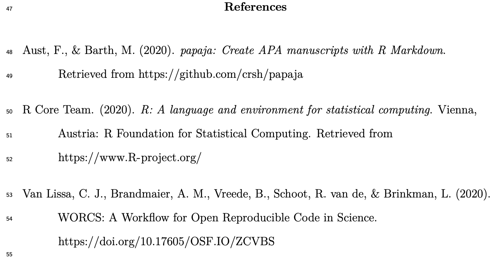
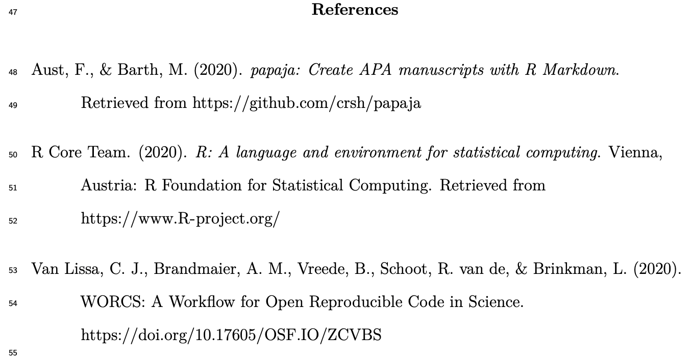
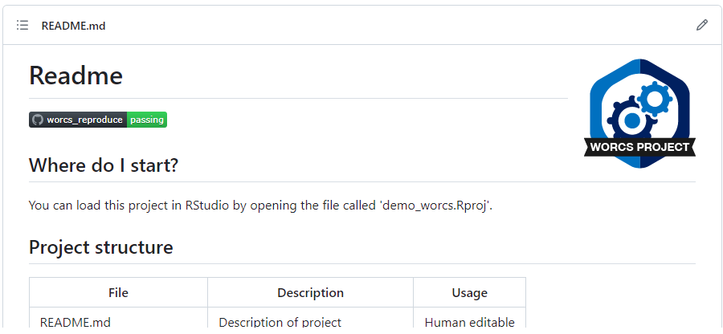
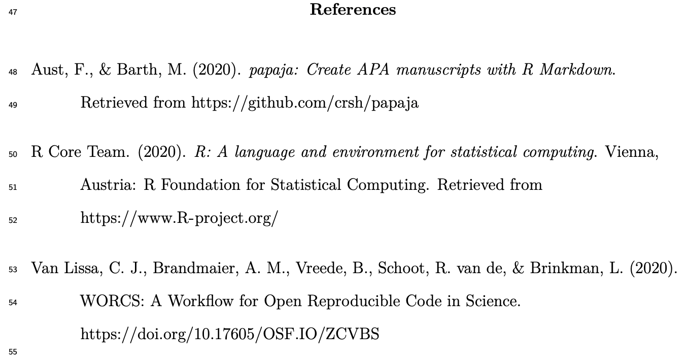
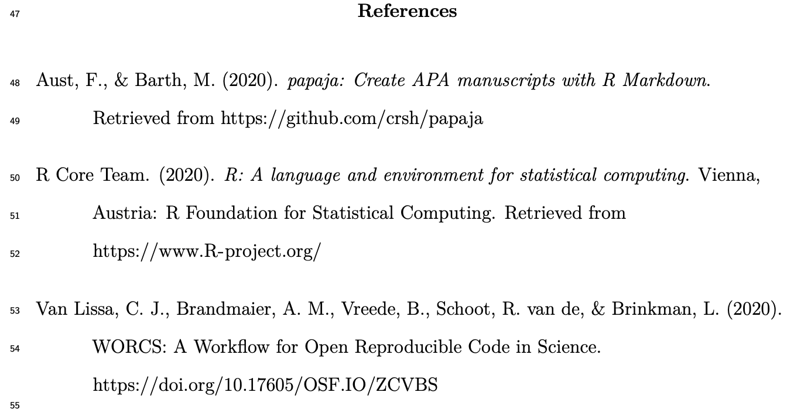

WORCS: A Workflow for Open Reproducible Code in Science
Caspar J. Van Lissa, Brandmaier, Brinkman, Lamprecht, Peikert, Struiksma, & Vreede (2021),
Data Science, DOI:
10.3233/DS-210031
Imagine…
You are researching “determinants of loss given default of residential mortgage loans in Portugal” (Like Ramos & Mateus, 2023)
- And tomorrow, Bank of America files for bankruptcy
- Everybody looks at you to produce risk analyses and scenarios
- Are you ready?!
In real life
- This happened during COVID
- In absence of vaccine, behavior was the only intervention
- Behavioral scientists wanted to support CDCs worldwide
- Our Dutch CDC said: The onboarding process would take weeks
- We cannot just “scale up”
Problem: Workflows not reproducible or shareable
Solution
- Convened experts on reproducibility to develop WORCS
- Counterexample: PsyCorona (130 scholars worldwide)
- Used WORCS to create open reproducible code and data
- 20+ publications used those code and data
Central Argument
- To be able to re-use, share, verify, and collaborate on work…
- …you must first make it reproducible and shareable
- Shareable does not mean open to the world
- You control access
- “as open as possible/as closed as necessary”
Solution: Neatly package your projects in a WORCS “reproducible repository” so you can come back to them in some years, share with colleagues, apply to different projects, etc.
Defining Open Science
“Open science is just good science” (Jonathan Tennant, 2018)
Formal definitions:
- TOP guidelines (Nosek et al., 2015)
- FAIR principles (Wilkinson et al., 2016)
Meeting TOP guidelines…
Relevant to openness and reproducibility1:
- Comprehensive citation of resources;
- Sharing data;
- Sharing code;
- Sharing research materials;
- Sharing protocols and documentation;
- Pre-registration of hypotheses before data collection;
- Pre-registration of analysis plan before execution;
- Replication of published results.
…in a FAIR manner
- Findable1
- Through standardized repositories or cross-repository search engines
- With Digital Object Identifier (DOI)
- Accessible online for humans and machines
- Interoperable
- Reusability
- License data, code, and materials for reuse
Open science as a paradigm shift
Open Science creates opportunities to make science more1
- reliable,
- cumulative,
- collaborative,
- inclusive
Open science as a challenge
Where do you start?
What workflow is right for you?
Introducing WORCS
Workflow for Open Reproducible Code in Science
- Standardized workflow
- Low threshold, high ceiling
- Conceptual platform-independent principles: DOI.org/10.3233/DS-210031
- “One-click” solution for R-users: https://cran.r-project.org/package=worcs
- Defaults based on best practices (several experts contributed)
- Compatible with institutional requirements and other workflows
- Pulling down the learning curve!

1. Dynamic document generation
- Paper consists of text and code
- Results, figures, and tables automatically generated
- Formatted as APA paper (including citations!)
Important because:
- Save time from copy-pasting output and formatting paper
- Eliminate human error in copying results;
- When revising the paper, all results are automatically updated;
- Reproducible by default: Just render the document
R Markdown example

R Markdown example rendered
 

2. Version control (using Git)
Why version control?
- NO MORE manuscript_final_final_SERIOUSLYFINAL.doc
- “Track Changes” on steroids: record entire project history
- If something breaks, you can figure out what happened.
- Facilitates collaboration and experimentation!
2. Version control (using Git)
- Tracks changes to (text-based) files line by line
- add files to your repository
- commit changes to these files
- push all commits to remote repository (private backup or public online supplement)
One command in worcs: git_update("Describe your changes")
GitHub
worcs repository is backed up in a remote repository like GitHub;- GitHub is a “cloud backup” with “social networking” features
- Clone other people’s repository to reproduce or build upon them
- Open Issues with questions or comments about the work
- Send suggested changes as a “Pull request”
- GitHub can be used to ‘tag’ specific states of the repository, e.g. a preregistration.
Important because:
- Complete backup of entire project history
- Go back to previous version if you want
- Try new things, don’t worry about losing work
- Prove that you preregistered your plans and followed them
- Easy collaboration online (even with strangers)
- People can copy your project and build on it
- GitHub can be your preregistration, your research archive, supplementary materials, comments section, etc.
- Connects to OSF.io project page
- Improves Findability
- Get DOI for project and/or specific resources
- Connects to Zenodo
- Get DOI for project and/or specific resources
- Store project snapshot
3. Dependency management
- To make project reproducible, people must have access to your (exact) software dependencies
- For R-users, these are
R-packages
- Difficult trade-off:

Dependency management in WORCS
- Maintains text-based list of packages, their version,
and origin (e.g., “CRAN”, “Bioconductor”, “GitHub”)
- This list can be version-controlled with Git;
- When a user loads the project,
renv installs all dependencies from the list
Important because:
- Essential for reproducibility
- Good for collaboration (everybody has same versions)
- Nice to your “future self”: Your code will work in the future
Unique features in worcs
- RStudio template
- Easy GitHub integration
- Add URL during project creation
git_update("Commit message")- Integration tests to reproduce your results on GitHub!
- Manuscript and preregistration templates
- From
rticles, papaja, and prereg
- Original templates for secondary- and longitudinal data
- Solutions for data sharing
- Cite
@essential and @@nonessential
- WORCS checklist and badge
- Automatic installation check:
check_worcs_installation()
Sharing data in WORCS
- Reproducibility requires open data
- Some data may be (privacy) sensitive
- E.g., microdata subject to GDPR
Use open_data():
- Original data made public
- Default is a
.csv (text based, human / machine readable)
- Other save / load functions can be used
Use closed_data():
- Original data saved locally;
- Synthetic data created using
synthetic()
- Synthetic data made public (default:
.csv)
- Unique ID of original data made public (so people can audit your work)
Sharing data in WORCS
Loading data load_data():
- If original data are present, load them…
- …Else, load synthetic data
- Scripts can thus ALWAYS be reproduced
- People can create a working script using synthetic data, and send it to you to run on original data
- Load function recorded in
.worcs file; default read.csv()
Reproducing WORCS Project
- Create entry point (e.g.,
manuscript.Rmd)
- Define recipe (e.g.,
rmarkdown::render("manuscript.Rmd"))
- Snapshot endpoints recipe (e.g.,
manuscript.pdf, table1.csv)
worcs::reproduce() generates the endpoints from the entry point via the recipe
worcs::check_endpoints() verifies that the results are identical
Continuous Integration
Run worcs::reproduce() on GitHub via GitHub Actions



 
